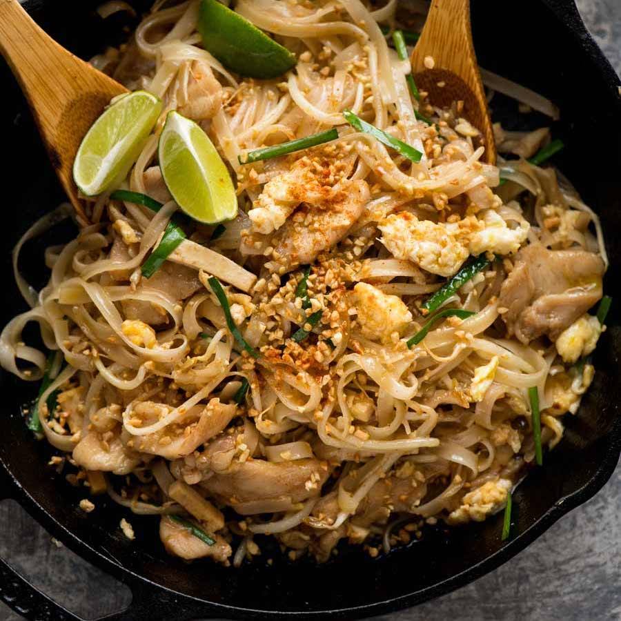

Pad Thai

A delicious traditional Thai noodle dish
Ingredients
- 125g Pad Thai noodles
- 1 1/2 tbsp Tamarind puree
- 3 tbsp brown sugar
- 2 tbsp fish sauce
- 1 1/2 tbsp oyster sauce
- 3 tbsp vegetable oil
- 1/2 onion
- 2 garlic cloves
- 150g chicken breast or thigh
- 2 eggs
- 1 1/2 cups of beansprouts
- 1/2 cup firm tofu
- 1/2 cup garlic chives
- 1/4 finely chopped peanuts
- Lime wedges
- Ground chilli
- More beansprouts
Preparation
- Put noodles in large bow and cover with boiling water.
Soak for 5 minutes then drain.
- Mix sauce in bowl.
- Heat 2 tbsp oil in a large non stick pan (or well seasoned skillet) over high heat.
Add garlic and onion, cook for 30 seconds.
- Add chicken and cook for 1 1/2 minutes until mostly cooked through.
- Push to one side of the pan, pour egg in on the other side. Scramble using the wooden spoon
(add touch of extra oil if pan is too dry), then mix into chicken.
- Add bean sprouts, tofu, noodles then sauce.
- Toss gently for about 1 1/2 minutes until Sauce is absorbed by the noodles.
- Add garlic chives and half the peanuts. Toss through quickly then remove from heat.
Serve immediately, sprinkled with remaining peanuts and lime wedges on the side, with
a sprinkle of chilli and a handful of extra beansprouts on the side if desired
(this is the Thai way!).
- Squeeze over lime juice to taste before eating.